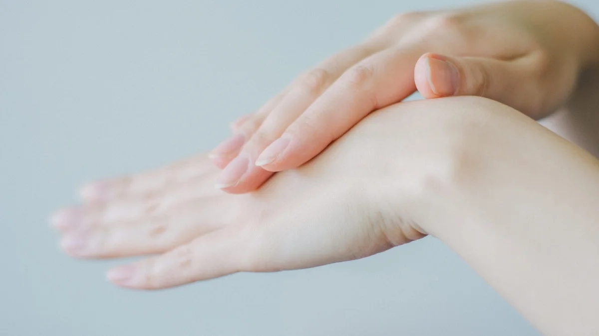

朝起きた瞬間から重だるい…「自律神経の乱れ」と「冷え」を根本から整える、専門家が教える東洋医学セルフケア3選
2026.06.21
「しっかり寝たはずなのに、朝起きた瞬間から体が鉛のように重い」「布団に入っても手足が冷たくてなかなか寝付けず、夜中に何度も目が覚めてしまう」。そんな、休んでも取れない慢性的な疲労感や冷えに悩まされていませんか？
季節の変わり目や、日々の仕事・家事のプレッシャーが重なる中で、私たちの心と体は知らず知らずのうちに緊張状態を続けています。この「なんとなく不調」が続く状態は、決して気のせいではなく、体からの切実なSOSです。この記事では、東洋医学と自律神経の専門家の視点から、その不調が起こる根本的なメカニズムを解き明かし、明日から自宅で無料でできる具体的なセルフケア方法をお伝えします。
なぜ疲れと冷えが取れないの？自律神経と東洋医学から見る原因
休んでも抜けない疲労感と冷えの正体、それは「自律神経の乱れによる血流不全」と、東洋医学でいう「気血（きけつ）の巡りの滞り」にあります。
日中のストレスや緊張、PCやスマートフォンの長時間の使用により、私たちの体は交感神経が過剰に優位な状態になります。交感神経が優位になると、全身の末梢血管がギュッと収縮し、手足の先や内臓へ十分な血液が届かなくなります。血液は全身に酸素や栄養を届け、不要な老廃物を回収する役割を担っているため、血流が滞ることで筋肉は凝り固まり、体温が低下。これが、冷えと慢性的な疲労感を引き起こす物理的なメカニズムです。
これを東洋医学の視点で捉えると、生命エネルギーである「気」と、全身に栄養と潤いを届ける「血」のバランスが崩れた状態（気滞・瘀血）を指します。特にストレスは「気」の流れを停滞させ、それに連動して「血」の巡りも悪くします。巡りが滞った体は、内臓の働きが低下し、余分な水分が溜まるため、結果として「冷えていて、常に重だるい」という悪循環に陥るのです。このスパイラルを断ち切るには、自律神経をリラックス（副交感神経優位）へ導き、物理的・感覚的に巡りを促してあげることが不可欠です。
実践のヒント：入浴は「38℃〜40℃のぬるめのお湯に15分」が鉄則
熱すぎるお湯（42℃以上）は交感神経を刺激し、血管を収縮させてしまいます。38℃〜40℃のぬるめのお湯にみぞおちまで15分浸かることで、副交感神経が優位になり、体の深部体温がじんわりと上昇します。お風呂から上がって約90分後に深部体温が下がるタイミングで、心地よい眠気が訪れます。
明日からすぐできる！自律神経を整えるセルフケア3選
1. 内臓を温めて自律神経を整える「おへそ温熱養生」
【手順（どこを・何秒・どう）】
寝る前の布団の中で行います。清潔なフェイスタオルを水で濡らして絞り、電子レンジ（500W〜600W）で約1分温めて「ホットタオル」を作ります。それをポリ袋に入れ、さらに別の乾いたタオルで包みます。仰向けに寝た状態で、おへその上（お腹全体）に置き、手のひらをその上に添えて、ゆっくりと深呼吸をしながら5分間温めます。【なぜ効くのか（根拠）】
おへその真上には、東洋医学で「神闕（しんけつ）」と呼ばれる、全身の「気」が集まる重要なツボがあります。また、お腹には全身の免疫細胞の約7割が集まり、自律神経を司る末梢神経が密集しています。お腹を物理的に直接温めることで、副交感神経が急激に優位になり、血管が拡張します。これにより手足の末梢血流まで劇的に改善し、全身が緩んで深部体温の心地よい低下を促すため、驚くほどスムーズに入眠できるようになります。
2. 下半身の冷えと滞りを解消する「三陰交（さんいんこう）の指圧」
【手順（どこを・何秒・どう）】
足の内くるぶしの最も高いところから、指幅4本分（人差し指から小指まで）上がったところの、骨のキワにある「三陰交」というツボを探します。親指の腹をツボに当て、痛気持ちいいと感じる強さで、息を吐きながら3秒かけて押し、息を吸いながら3秒かけて力を抜きます。これを左右それぞれ10回ずつ繰り返してください。【なぜ効くのか（根拠）】
三陰交は、東洋医学において「肝（かん）」「脾（ひ）」「腎（じん）」という、血流、消化、ホルモンバランスや水分代謝を司る3つの重要な経絡（エネルギーの通り道）が交わる場所です。ここを刺激することで、骨盤内の血流が促され、手足の冷えや、冷えからくる胃腸の弱り、生理不順、そして自律神経の乱れを包括的に整えることができます。
3. 脳の緊張を解いて呼吸を深くする「耳引っ張りマッサージ」
【手順（どこを・何秒・どう）】
両耳の真ん中あたりを親指と人差し指で軽くつまみます。息をふうっと吐きながら、真横（外側）に向かってじわーっと5秒間引っ張ります。次に、上方向、下方向へも同様に5秒ずつ引っ張ります。最後に、耳全体を後ろに向かってゆっくりと5回まわします。これを朝起きた時と、夜眠る前の1日2回行います。【なぜ効くのか（根拠）】
耳の周りや耳下腺周辺には、自律神経（特にリラックスを司る迷走神経）が豊富に分布しています。また、耳の奥には頭蓋骨の「蝶形骨（ちょうけいこつ）」という骨があり、これは自律神経の中枢である「視床下部」と連動しています。耳を優しく引っ張ることで頭蓋骨の微細な緊張が緩み、脳脊髄液の循環が促されます。これにより、興奮状態だった脳が瞬時にリラックスモードへと切り替わり、呼吸が深くなって全身の余分な力が抜けていきます。

今日から始める、わたしに戻るための養生時間
朝の重だるさや、消えない手足の冷え。それは決して「あなたが怠けているから」ではなく、日々頑張り続ける心と体が、必死に休息を求めているサインです。今日ご紹介したおへそ温め、ツボ押し、耳マッサージは、どれも特別な道具を使わずに今すぐ始められる養生法です。まずは今夜、眠る前の5分間だけ、ご自身の体と静かに向き合う時間を作ってみてください。
けれど、どうしても忙しくてそんな時間が取れない日や、心も体も疲れ果ててセルフケアをする気力すら湧かない日もありますよね。そんな時は、毎日の入浴を「養生の時間」に変えてみませんか。
セルフケアブランド「fucuu（フクウ）」の生薬入浴剤は、厳選された生薬を100%使用し、化学添加物を一切加えずにお作りしています。お湯に溶け出す植物のちからが、芯から体を温め、乱れた自律神経を優しく整えます。お風呂にただ浸かるだけで、自然と「わたしに戻る」時間。そんなフクフクとした幸福感に包まれる温活を、今夜から始めてみませんか。
fucuuの生薬入浴剤・国産アロマは、BASEオンラインショップでご購入いただけます。
BASEで購入する